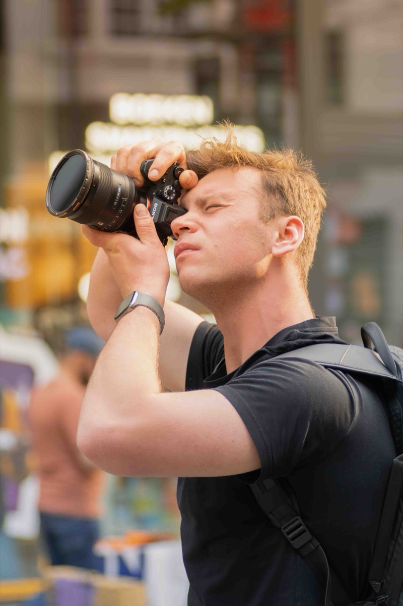

Gilles & Kiara
Hun dag. Hun verhaal. Hun film.
Fotografie · Videografie · Drone
Voor merken, mensen en momenten.
Uit mijn portfolio
Trouw
Jullie dag. Helemaal jullie.
Ontdek mijn werk
01 Het portfolio
Echte momenten. Sterke beelden.
Van jullie trouwdag tot je merk in beeld. Kies een serie en ontdek de volledige fotogalerij.

Jullie dag, in beelden om te bewaren.
Bekijk trouwfoto’s
De mensen en de sfeer van je event.
Bekijk eventfoto’s
Persoonlijk en met karakter.
Bekijk portretten
Even de tijd voor jullie twee.
Bekijk koppelfoto’s
Vorm, lijnen en karakter.
Bekijk autofoto’s
Licht, materiaal en de kleinste details.
Bekijk productfoto’sVeeg over de foto om te bladeren.
02 Van opname tot afwerking
Jouw verhaal, in beweging.
Bedrijfsfilms, productvideo’s, eventfilms en trouwfilms. Ik verzorg de opname, montage, kleur en het geluid.
Bekijk mijn videowerkHun dag. Hun verhaal. Hun film.
De beleving van EuroShop.
Je product in de hoofdrol.
Licht, lijnen en beweging.
Een film voor jouw merk of moment?
Vertel me wat je wilt laten zien.
03 Een ander perspectief
Foto & film vanuit de lucht.
Je locatie, bedrijf of evenement van bovenaf. Als dronepiloot breng ik het grotere geheel in beeld met mijn DJI Mavic 4 Pro.
Ontdek mijn dronewerk
DJI Mavic 4 ProMijn drone voor foto en film.

De blik achter SDL Visuals
Fotograaf, videograaf en dronepiloot uit Deinze. Ik kijk naar licht, sfeer en de details die jouw verhaal een eigen karakter geven.
Laten we kennismakenContact
Seppe De Luycker · DeinzeFoto’s, een film of dronebeelden? Samen bekijken we wat bij jouw project past.